Input formatfollowed by :BEAM matrix tracing.... (up to 80 characters)
![\begin{displaymath}\begin{array}{ccccc}
0&&&& \\
0&0&0&0&\epsilon_{x} \\
0&0...
...gma_{l}&\sigma_{\delta}&&& \\
mprint& [mlist]&&&
\end{array} \end{displaymath}](img54.png)
Parameter definitions
The relationship between the 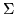 beam matrix and the input coefficients is as follows :
Let 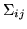, with  and
and  taking the values 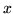, 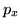, ,
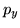, 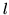 and 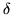, be the elements of the symmetric positive
definite matrix . Then the following formulae describe the
relationship between and the input parameters :
taking the values 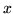, 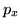, ,
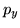, 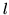 and 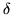, be the elements of the symmetric positive
definite matrix . Then the following formulae describe the
relationship between and the input parameters :
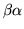
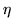 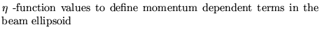
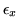 and 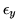 are the horizontal and vertical
emittances. In this case, the beam is assumed uncoupled .
NOTE :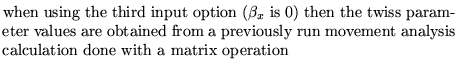
mprint 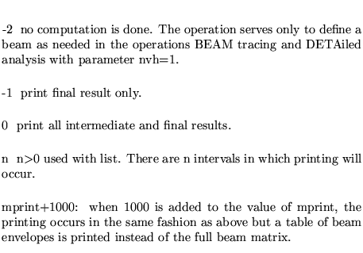
mlist 
Units
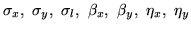 are measured in meters
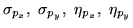 are
measured in
radians.
 are measured in m-radians.
are measured in m-radians.
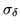 unit is one.
The correlation coefficients 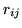 are dimensionless and vary
from 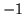 to 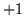
Examples
Three examples are given. The first is extracted from demo 7 , the second and third are extracted from demo 2.
The first shows the definition of the beam
using the extension  's.
's.
The second defines the transverse part of the beam by using the twiss parameters and the emittances.
The third shows a definition used in conjunction with a previous matrix analysis. It uses the twiss parameters obtained in that analysis and the value of the tranverse emittances.
BEAM MATRIX TRACING
0.00012157290 0 0 0 0 0
0.00000246750 0 0 0 0
0.0000826254 0 0 0
0.0000036309 0 0
0.002 0
0.005
-1,
beam definition
0
1.0 0 0 0 1.0e-06
2.0 0 0 0 1.0e-06
0.001 0.001
0,
MATRIX : FIRST ORDER CELL MATRIX.
1 -1,
BEAM MATRIX
0
0 0 0 0 1.0E-06
0 0 0 0 1.0E-06
0.02 0.001
-1;